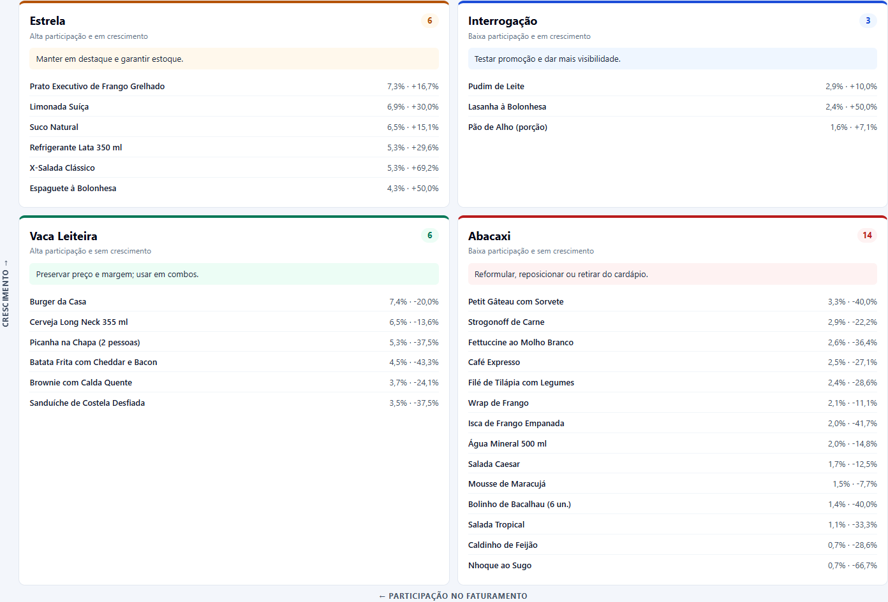
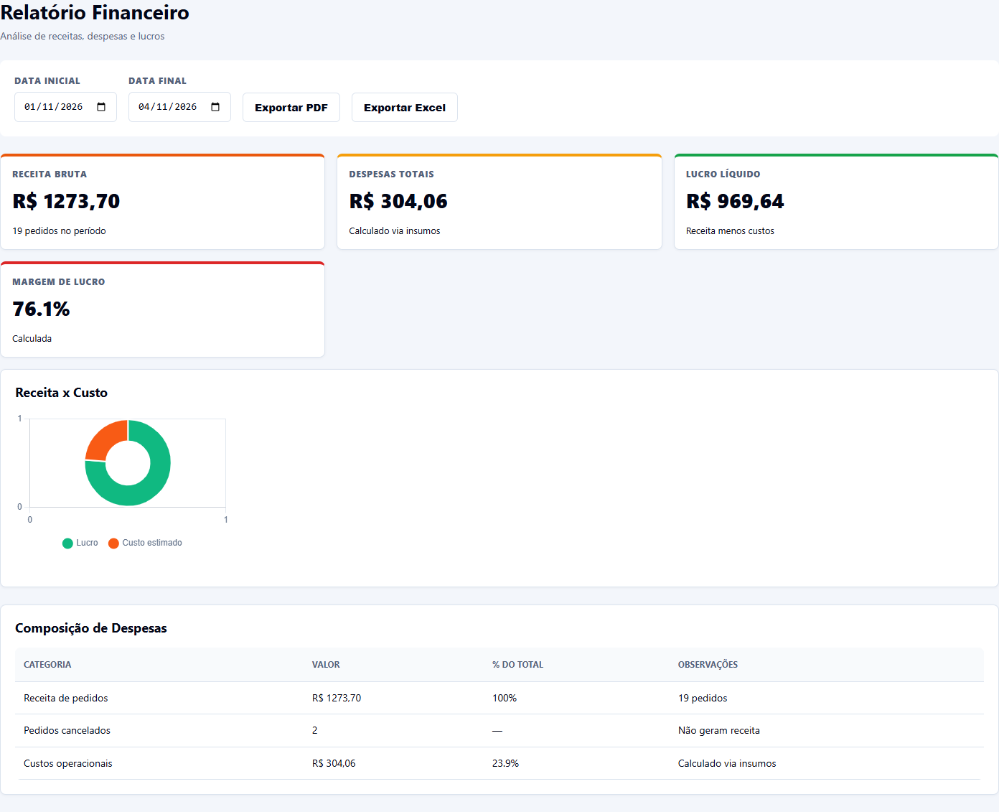
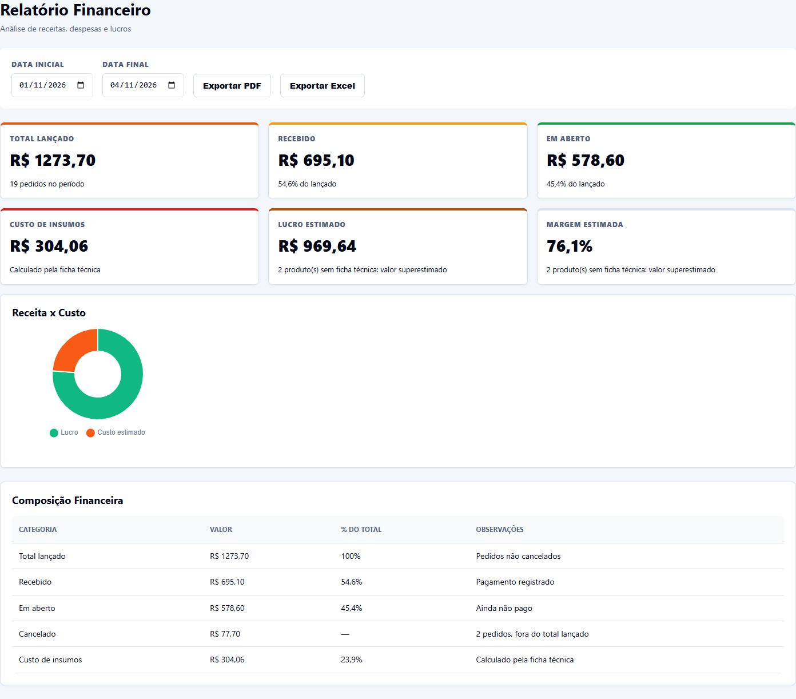
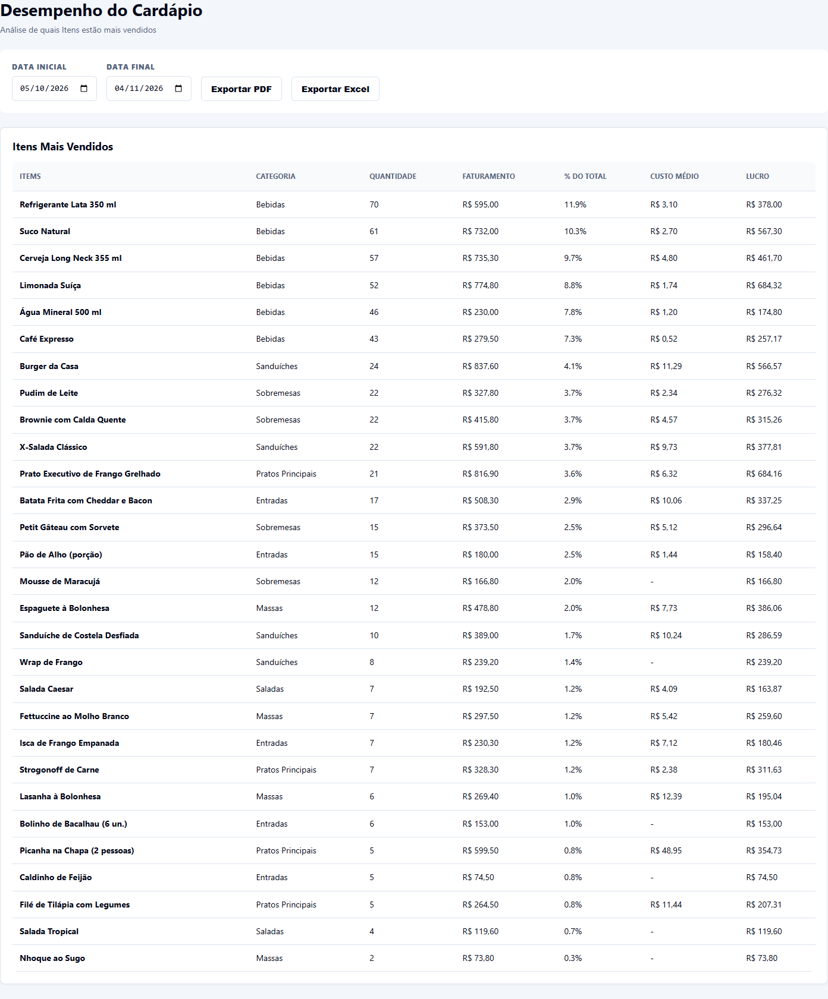
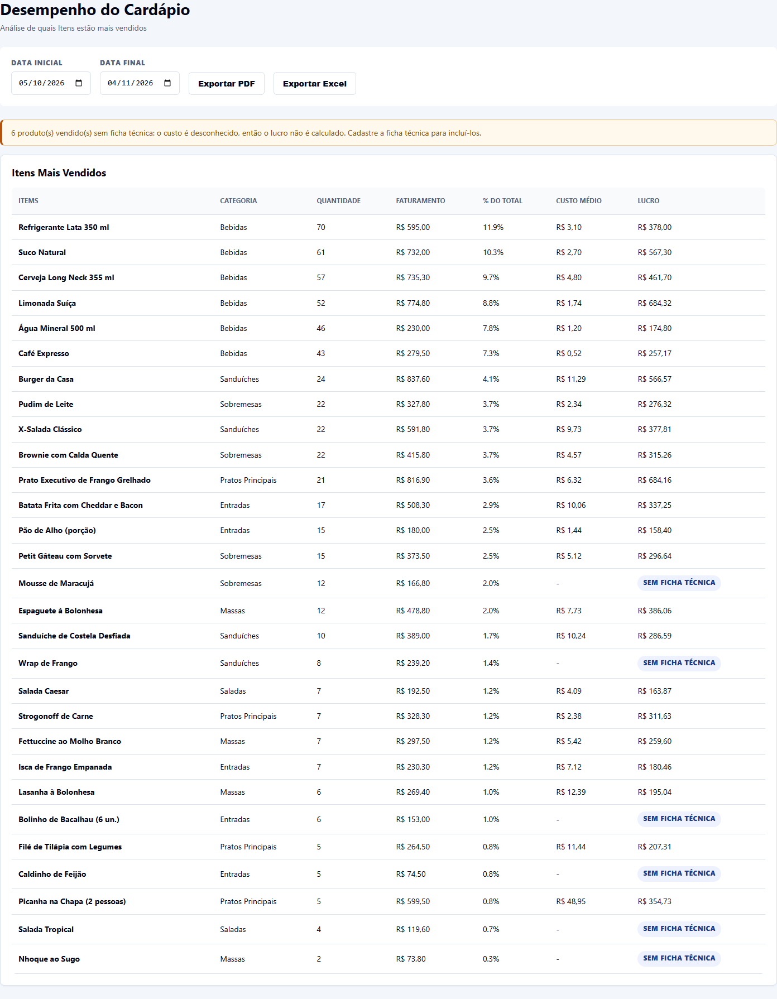
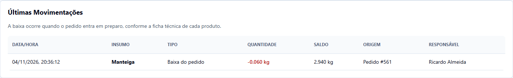
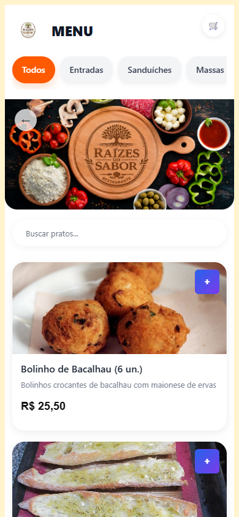
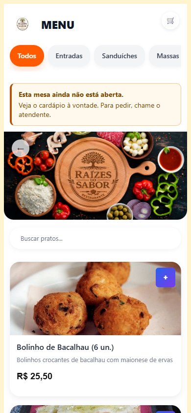
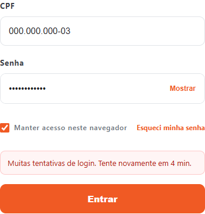

<meta charset="utf-8">
<meta name="viewport" content="width=device-width, initial-scale=1, viewport-fit=cover">
<title>DataPlate: antes e depois</title>
<meta name="claude:viewport-fit-sides" content="cover">
<link rel="preconnect" href="https://fonts.googleapis.com">
<link rel="preconnect" href="https://fonts.gstatic.com" crossorigin>
<link rel="stylesheet" href="https://fonts.googleapis.com/css2?family=Archivo:wght@600;800&family=Source+Sans+3:wght@400;600&family=IBM+Plex+Mono:wght@400;500&display=swap">
<style>
  /* Relatorio de uma coluna: cada mudanca mostra o antes e o depois lado a lado, com a laranja da marca. */
  :root {
    --fundo: #f6f5f2;
    --superficie: #ffffff;
    --texto: #1a1c20;
    --texto-suave: #565b63;
    --linha: #dcdad4;
    --marca: #c2410c;
    --antes-fundo: #e9e8e3;
    --antes-texto: #4a4e55;
    --depois-fundo: #fbe5d8;
    --depois-texto: #9a3412;
    --titulo: "Archivo", "Arial Black", Arial, sans-serif;
    --corpo: "Source Sans 3", "Segoe UI", Arial, sans-serif;
    --dados: "IBM Plex Mono", Consolas, monospace;
  }
  @media (prefers-color-scheme: dark) {
    :root:not([data-theme="light"]) {
      --fundo: #17181b;
      --superficie: #212327;
      --texto: #f0efeb;
      --texto-suave: #b2b5ba;
      --linha: #3a3d43;
      --marca: #fb8a4f;
      --antes-fundo: #34363b;
      --antes-texto: #d3d4d6;
      --depois-fundo: #4c2613;
      --depois-texto: #fdba8c;
      color-scheme: dark;
    }
  }
  :root[data-theme="dark"] {
    --fundo: #17181b;
    --superficie: #212327;
    --texto: #f0efeb;
    --texto-suave: #b2b5ba;
    --linha: #3a3d43;
    --marca: #fb8a4f;
    --antes-fundo: #34363b;
    --antes-texto: #d3d4d6;
    --depois-fundo: #4c2613;
    --depois-texto: #fdba8c;
    color-scheme: dark;
  }

  * { box-sizing: border-box; }
  body {
    margin: 0;
    background: var(--fundo);
    color: var(--texto);
    font: 400 17px/1.55 var(--corpo);
  }
  .pagina {
    display: grid;
    gap: 56px;
    max-width: 1120px;
    margin: 0 auto;
    padding-block: 40px 64px;
    padding-left: max(16px, env(safe-area-inset-left, 0px));
    padding-right: max(16px, env(safe-area-inset-right, 0px));
  }
  h1, h2 { font-family: var(--titulo); text-wrap: balance; margin: 0; }
  h1 { font-size: clamp(32px, 6vw, 48px); font-weight: 800; line-height: 1.08; }
  h2 { font-size: clamp(22px, 3.4vw, 28px); font-weight: 800; line-height: 1.2; }
  p { margin: 0; max-width: 72ch; }
  code { font-family: var(--dados); font-size: .86em; overflow-wrap: anywhere; }

  .abertura { display: grid; gap: 14px; }
  .sobretitulo {
    color: var(--marca);
    font: 600 13px/1.3 var(--titulo);
    letter-spacing: .08em;
    text-transform: uppercase;
  }
  .abertura p { color: var(--texto-suave); font-size: 19px; }

  .resumo { display: grid; gap: 1px; margin: 0; background: var(--linha); border: 1px solid var(--linha); grid-template-columns: repeat(4, minmax(0, 1fr)); }
  .resumo div { display: grid; gap: 2px; align-content: start; padding: 16px; background: var(--superficie); }
  .resumo dt { color: var(--texto-suave); font-size: 15px; line-height: 1.35; }
  .resumo dd { margin: 0; font: 800 28px/1.15 var(--titulo); font-variant-numeric: tabular-nums; }

  .mudanca { display: grid; gap: 16px; }
  .mudanca > p { color: var(--texto-suave); }
  .comparacao { display: grid; gap: 16px; grid-template-columns: repeat(2, minmax(0, 1fr)); align-items: start; }
  .lado { display: grid; gap: 8px; min-width: 0; margin: 0; }
  .selo {
    justify-self: start;
    padding: 2px 10px;
    border-radius: 4px;
    font: 600 13px/1.5 var(--titulo);
    letter-spacing: .04em;
    text-transform: uppercase;
  }
  .selo-antes { background: var(--antes-fundo); color: var(--antes-texto); }
  .selo-depois { background: var(--depois-fundo); color: var(--depois-texto); }
  .lado img { display: block; width: 100%; height: auto; border: 1px solid var(--linha); background: #fff; }
  .lado figcaption { color: var(--texto-suave); font-size: 15px; }
  .recorte-final img { aspect-ratio: 1392 / 640; object-fit: cover; object-position: bottom; }
  .celular img { max-width: 300px; }
  .inteira { display: grid; gap: 8px; margin: 0; }
  .inteira img { display: block; width: 100%; height: auto; border: 1px solid var(--linha); background: #fff; }
  .inteira figcaption { color: var(--texto-suave); font-size: 15px; }

  .vazio {
    display: grid;
    gap: 6px;
    align-content: center;
    min-height: 180px;
    padding: 20px;
    border: 1px dashed var(--linha);
    background: var(--superficie);
  }
  .vazio strong { font: 800 22px/1.25 var(--titulo); }
  .vazio span { color: var(--texto-suave); font-size: 15px; }

  .numeros { display: grid; gap: 1px; margin: 0; background: var(--linha); border: 1px solid var(--linha); grid-template-columns: repeat(3, minmax(0, 1fr)); }
  .numeros div { display: grid; gap: 2px; align-content: start; padding: 14px 16px; background: var(--superficie); }
  .numeros dt { color: var(--texto-suave); font-size: 15px; }
  .numeros dd { margin: 0; font: 800 24px/1.2 var(--titulo); font-variant-numeric: tabular-nums; }

  .rolagem { overflow-x: auto; border: 1px solid var(--linha); background: var(--superficie); }
  table { width: 100%; min-width: 660px; border-collapse: collapse; font-size: 16px; }
  caption { position: absolute; width: 1px; height: 1px; overflow: hidden; clip-path: inset(50%); }
  th, td { padding: 12px 16px; border-bottom: 1px solid var(--linha); text-align: left; vertical-align: top; }
  tbody tr:last-child th, tbody tr:last-child td { border-bottom: 0; }
  thead th { font: 600 13px/1.4 var(--titulo); letter-spacing: .04em; text-transform: uppercase; color: var(--texto-suave); }
  tbody th { font-weight: 600; width: 34%; }
  td { font-variant-numeric: tabular-nums; }

  ul { display: grid; gap: 8px; margin: 0; padding-left: 20px; max-width: 76ch; }

  @media (max-width: 720px) {
    body { font-size: 16px; }
    .pagina { gap: 44px; padding-block: 28px 48px; }
    .comparacao { grid-template-columns: minmax(0, 1fr); }
    .resumo { grid-template-columns: repeat(2, minmax(0, 1fr)); }
    .numeros { grid-template-columns: minmax(0, 1fr); }
    .recorte-final img { aspect-ratio: 1392 / 900; }
  }
</style>

<main class="pagina">
  <header class="abertura">
    <span class="sobretitulo">Sistema de gestão para restaurantes</span>
    <h1>DataPlate: antes e depois</h1>
    <p>O que mudou nesta etapa, com capturas da versão anterior e da atual. As duas rodaram sobre os mesmos dados de demonstração, com vendas de setembro a novembro de 2026.</p>
  </header>

  <dl class="resumo" aria-label="Resumo da etapa">
    <div><dt>Objetivo do TAP que faltava</dt><dd>Matriz BCG</dd></div>
    <div><dt>Em aberto que aparecia como faturado em novembro</dt><dd>R$ 578,60</dd></div>
    <div><dt>Testes automatizados da API</dt><dd>15 → 66</dd></div>
    <div><dt>Dependências npm</dt><dd>77 → 7</dd></div>
  </dl>

  <section class="mudanca" aria-labelledby="bcg">
    <h2 id="bcg">Matriz BCG do cardápio</h2>
    <p>O Termo de Abertura previa classificar os pratos pela Matriz BCG, mas o sistema não tinha essa função. Agora cada item recebe uma classificação e uma ação sugerida.</p>
    <div class="comparacao">
      <div class="lado">
        <span class="selo selo-antes">Antes</span>
        <div class="vazio">
          <strong>Nenhuma tela ou rota</strong>
          <span>O relatório de cardápio só listava os itens mais vendidos, sem indicar o que fazer com cada um.</span>
        </div>
      </div>
      <dl class="lado numeros" style="grid-template-columns: repeat(2, minmax(0, 1fr))" aria-label="Itens por quadrante">
        <div><dt>Estrela</dt><dd>6</dd></div>
        <div><dt>Interrogação</dt><dd>3</dd></div>
        <div><dt>Vaca Leiteira</dt><dd>6</dd></div>
        <div><dt>Abacaxi</dt><dd>14</dd></div>
      </dl>
    </div>
    <figure class="inteira">
      
      <figcaption>Depois: vendas de 05/10 a 04/11 comparadas com 04/09 a 04/10.</figcaption>
    </figure>
    <p>Sem dados de mercado, a matriz foi adaptada: a participação de mercado virou participação no faturamento do restaurante, e o crescimento do mercado virou a variação de cada produto em relação ao período anterior. A participação é alta a partir de 3,45%, a média por item do cardápio. O produto está em crescimento quando faturou mais do que no período anterior.</p>
  </section>

  <section class="mudanca" aria-labelledby="financeiro">
    <h2 id="financeiro">Faturamento separado do dinheiro recebido</h2>
    <p>A receita somava todos os pedidos não cancelados, inclusive os que ainda não tinham sido pagos. Agora o pedido registra quando foi pago, e o relatório separa os valores.</p>
    <dl class="numeros" aria-label="Valores de novembro">
      <div><dt>Total lançado</dt><dd>R$ 1.273,70</dd></div>
      <div><dt>Recebido</dt><dd>R$ 695,10</dd></div>
      <div><dt>Em aberto</dt><dd>R$ 578,60</dd></div>
    </dl>
    <div class="comparacao">
      <figure class="lado">
        <span class="selo selo-antes">Antes</span>
        
      </figure>
      <figure class="lado">
        <span class="selo selo-depois">Depois</span>
        
      </figure>
    </div>
  </section>

  <section class="mudanca" aria-labelledby="ficha">
    <h2 id="ficha">Lucro somente onde o custo é conhecido</h2>
    <p>Sem ficha técnica, o custo era tratado como zero e todo o faturamento aparecia como lucro. A Mousse de Maracujá, por exemplo, mostrava R$ 166,80 de lucro sobre R$ 166,80 de vendas. Agora o relatório avisa que falta a ficha e não calcula o lucro.</p>
    <div class="comparacao recorte-final">
      <figure class="lado">
        <span class="selo selo-antes">Antes</span>
        
      </figure>
      <figure class="lado">
        <span class="selo selo-depois">Depois</span>
        
      </figure>
    </div>
  </section>

  <section class="mudanca" aria-labelledby="estoque">
    <h2 id="estoque">Venda que baixa o estoque</h2>
    <p>Insumos e fichas técnicas já existiam, mas os pedidos nunca alteravam o estoque. Agora a baixa acontece quando o preparo começa, e cada movimentação fica registrada. O Gerente recebe um aviso quando um insumo atinge o mínimo.</p>
    <div class="rolagem">
      <table>
        <caption>Estoque de manteiga após a venda de 2 porções de Pão de Alho</caption>
        <thead><tr><th scope="col">Venda de 2 Pães de Alho, com 0,030 kg de manteiga cada</th><th scope="col">Antes</th><th scope="col">Depois</th></tr></thead>
        <tbody>
          <tr><th scope="row">Manteiga antes da venda</th><td>3,000 kg</td><td>3,000 kg</td></tr>
          <tr><th scope="row">Manteiga com o pedido em preparo</th><td>3,000 kg</td><td>2,940 kg</td></tr>
        </tbody>
      </table>
    </div>
    <figure class="inteira">
      
      <figcaption>Depois: registro da baixa com origem e responsável.</figcaption>
    </figure>
  </section>

  <section class="mudanca" aria-labelledby="qr">
    <h2 id="qr">Pedido pelo QR Code só com a mesa aberta</h2>
    <p>O QR Code impresso nunca muda. Quem tivesse uma foto dele podia fazer pedidos de qualquer lugar e ainda ocupar a mesa. Agora a equipe abre a mesa, e o cliente que chega antes disso pode ver o cardápio, mas não consegue pedir.</p>
    <div class="comparacao celular">
      <figure class="lado">
        <span class="selo selo-antes">Antes</span>
        
        <figcaption>Pedido em mesa livre: aceito (HTTP 201), e a mesa passava para ocupada.</figcaption>
      </figure>
      <figure class="lado">
        <span class="selo selo-depois">Depois</span>
        
        <figcaption>Pedido em mesa livre: recusado (HTTP 409). Depois de aberta pelo atendente: aceito (HTTP 201).</figcaption>
      </figure>
    </div>
  </section>

  <section class="mudanca" aria-labelledby="seguranca">
    <h2 id="seguranca">Segurança e proteção de dados</h2>
    <p>O CPF é dado pessoal e aparecia em lugares desnecessários. Além disso, a API aceitava tentativas ilimitadas de senha e subia com credenciais conhecidas. Resultados medidos nas duas versões:</p>
    <div class="rolagem">
      <table>
        <caption>Comparação de segurança entre as versões</caption>
        <thead><tr><th scope="col">Verificação</th><th scope="col">Antes</th><th scope="col">Depois</th></tr></thead>
        <tbody>
          <tr><th scope="row">8 senhas erradas seguidas</th><td>401 nas 8 tentativas</td><td>401 nas 5 primeiras, 429 nas 3 seguintes</td></tr>
          <tr><th scope="row">Identificação legível no token (JWT)</th><td><code>00000000002</code>, o CPF</td><td><code>usuario:3</code></td></tr>
          <tr><th scope="row">Conexão da equipe no log da API</th><td><code>/ws?token=eyJhbGciOiJI...</code></td><td><code>/ws</code></td></tr>
          <tr><th scope="row">Recuperação de senha: CPF cadastrado e CPF inexistente</th><td>503 e 202: a diferença revela quem tem cadastro</td><td>202 e 202, com a mesma resposta</td></tr>
          <tr><th scope="row">API fora do ambiente local, sem configuração</th><td>Sobe com segredo e senha padrão</td><td>Não sobe e informa o que falta</td></tr>
        </tbody>
      </table>
    </div>
    <figure class="inteira" style="max-width: 360px">
      
      <figcaption>Depois: mensagem exibida no login.</figcaption>
    </figure>
  </section>

  <section class="mudanca" aria-labelledby="engenharia">
    <h2 id="engenharia">Qualidade do projeto</h2>
    <div class="rolagem">
      <table>
        <caption>Comparação de qualidade do projeto entre as versões</caption>
        <thead><tr><th scope="col">Item</th><th scope="col">Antes</th><th scope="col">Depois</th></tr></thead>
        <tbody>
          <tr><th scope="row">Testes automatizados da API</th><td>15 em 2 arquivos</td><td>66 em 6 arquivos</td></tr>
          <tr><th scope="row">Automação no GitHub</th><td>Deploy sem testes e sem o arquivo de configuração</td><td>CI: cria o banco do zero, aplica as migrações e roda os testes</td></tr>
          <tr><th scope="row">Dependências npm</th><td>77, a maioria de um frontend React que não é usado</td><td>7</td></tr>
          <tr><th scope="row">Ligação entre requisito, tela, API e teste</th><td>Não existia</td><td>Tabela em <code>docs/rastreabilidade.md</code></td></tr>
          <tr><th scope="row">Horário dos pedidos</th><td>UTC: 3 horas à frente, e o "hoje" virava às 21h</td><td>Fuso do restaurante</td></tr>
        </tbody>
      </table>
    </div>
  </section>

  <section class="mudanca" aria-labelledby="verificacao">
    <h2 id="verificacao">Como foi verificado</h2>
    <ul>
      <li>Os 66 testes da API passaram no banco local e em um banco criado do zero, com os mesmos passos do CI. O CI do GitHub roda a partir do envio do código.</li>
      <li>Um teste no navegador percorreu o fluxo real: mesa bloqueada, abertura pelo atendente, pedido, eventos em tempo real nas quatro telas da equipe e baixa de estoque.</li>
      <li>Os cenários que gravam dados rodaram em uma cópia do banco, para não alterar a massa de demonstração.</li>
    </ul>
  </section>

  <section class="mudanca" aria-labelledby="limites">
    <h2 id="limites">Limites conhecidos</h2>
    <ul>
      <li>As vendas são dados de demonstração, então a classificação BCG ilustra o método e não descreve um restaurante real.</li>
      <li>Uma foto do QR Code ainda funciona enquanto a mesa estiver aberta. O limite de 20 pedidos por mesa a cada 10 minutos reduz o abuso, mas não o elimina.</li>
      <li>Pedido cancelado depois de iniciar o preparo não devolve o insumo, e a perda ainda não é registrada à parte.</li>
      <li>Os contadores de tentativas ficam na memória da API e valem para um único processo.</li>
      <li>O fechamento da conta ainda envia uma requisição por pedido, em vez de uma única transação.</li>
    </ul>
  </section>
</main>
